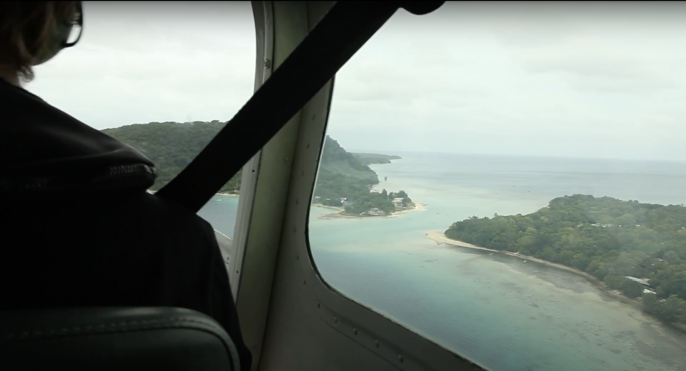
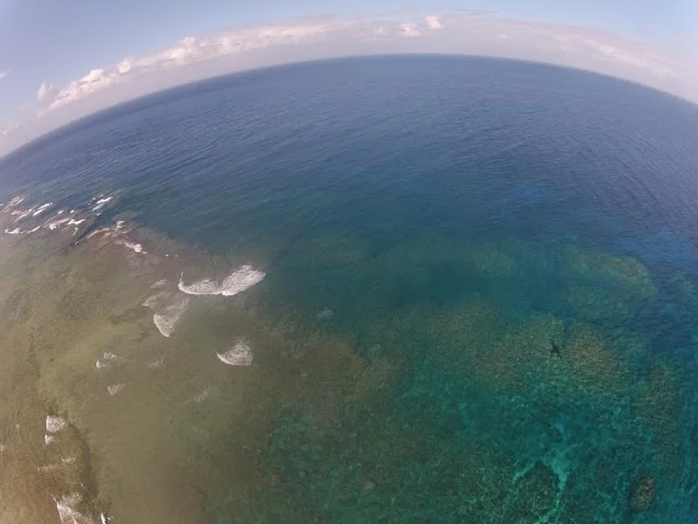

Finalement arrivés à Port-Vila !
Nous avons passé la journée d'hier à Nouméa en transit, et avons rencontrés un ni-van (habitant du Vanuatu) qui étudie les volcan, et avons profité de l'océan :)

La journée d'aujourd'hui à Port-Vila a été essentielle pour vérifier que l'hydravion permettra bien de faire les photos, et pour obtenir les autorisations. Demain nous allons rencontrer tous les chercheurs et autorités que nous devons encore rencontrer, et ferons des essais en avion.
Plusieurs interviews sont déjà enregistrées.

Puis jeudi matin, départ vers Tanna, avec Sandrine, la volcanologique du Geohazards Department au Vanuatu, qui parle le bich'lama (langue locale) et nous facilitera les cérémonies sur place, en raison des différentes coutumes à respecter.